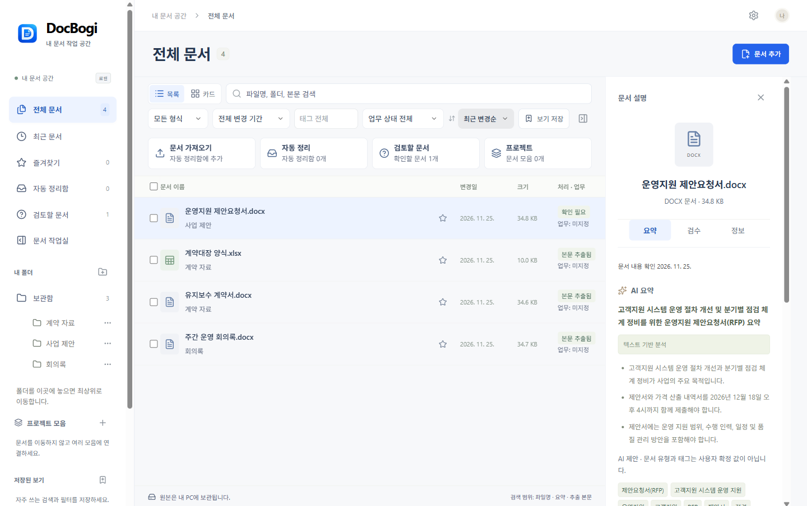
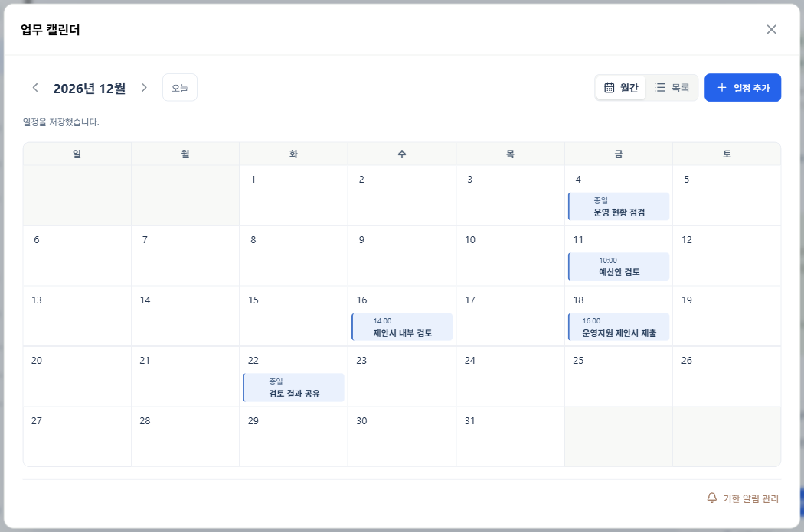

보관함에서 필요한 문서를 찾으세요
PDF, Word, PowerPoint, Excel, 한글 문서를 가져와 업무별 폴더에 정리하고 파일명과 본문으로 검색하세요. AI를 연결하면 문서를 선택해 요약과 오탈자 후보도 확인할 수 있습니다.

업무 파일을 내 PC에 모아 파일명과 본문으로 찾으세요. 원문에서 확인한 제출 마감을 업무 캘린더에 등록하고, 일정에서 해당 문장으로 돌아갈 수 있습니다.
v1.1.3 · 사용 가이드 · SHA-256 확인
배포 · 업무 캘린더와 키보드로 고르는 검색 필터
제안 자료 폴더
12월 18일 오후 4시까지 제안서를 제출합니다.
제안요청서 · 제출 안내
계약 자료 폴더
유지보수 계약은 3월 31일에 끝납니다.
계약서 · 계약 기간
업무 일정 폴더
12월 15일 오전 10시에 제안서 초안을 검토합니다.
일정표 · 내부 검토 항목
예제 문서를 선택해 날짜와 출처를 살펴보세요.
PDF, Word, PowerPoint, Excel, 한글 문서를 가져와 업무별 폴더에 정리하고 파일명과 본문으로 검색하세요. AI를 연결하면 문서를 선택해 요약과 오탈자 후보도 확인할 수 있습니다.

문서에서 캘린더에 추가를 누르면 날짜 후보가 표시됩니다. 제출 일시와 인용문을 확인해 저장하고 월간 또는 목록 보기에서 다른 업무 일정과 함께 살펴보세요.

저장한 일정에서 원문 위치 열기를 누르면 문서 작업실에 근거가 표시됩니다. 작업실에서 편집을 지원하는 문서는 문단이나 셀의 텍스트를 고쳐 같은 형식의 사본으로 저장할 수 있습니다.

가져온 문서는 내 PC에서 고른 보관함에 복사됩니다. AI로 분석할 때는 작업에 필요한 추출 텍스트와 지원되는 페이지 또는 내장 이미지가 연결한 제공자에게 전송됩니다.
문서를 가져오고 폴더에 정리하거나 파일명과 추출 본문으로 검색할 수 있습니다. 작업실에서 직접 고쳐 사본을 저장할 수도 있습니다. AI 요약·검수, 자동 분류, 문서에 질문하는 기능을 쓰려면 제공자를 연결하세요.
HWP 5·HWPX, XLSX·XLS를 비롯해 PDF, DOCX, PPTX를 가져올 수 있습니다. 파일에 따라 작업실에서 본문이나 텍스트 셀을 수정할 수 있고, PDF에는 하이라이트와 메모를 추가할 수 있습니다. 형식별 범위는 사용 가이드에서 확인하세요. 지원 파일 보기
사용 가이드에서 문서 가져오기, 업무 캘린더, AI 연결과 작업실 사용법을 확인하세요.